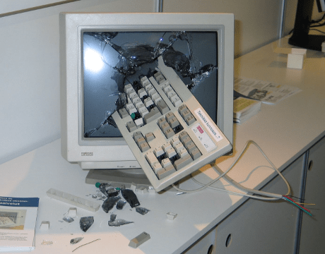

- Avviato automaticamente all'accensione
- Intermediario tra utente, applicazioni ed hardware
- Funzionalità: a lotti (batch), o interattivi
- Accesso utenti: mono-utente, o multi-utente
- Gestione risorse: mono-programmazione, multi-programmazione (time-sharing), multi-elaborazione (multi-core...)